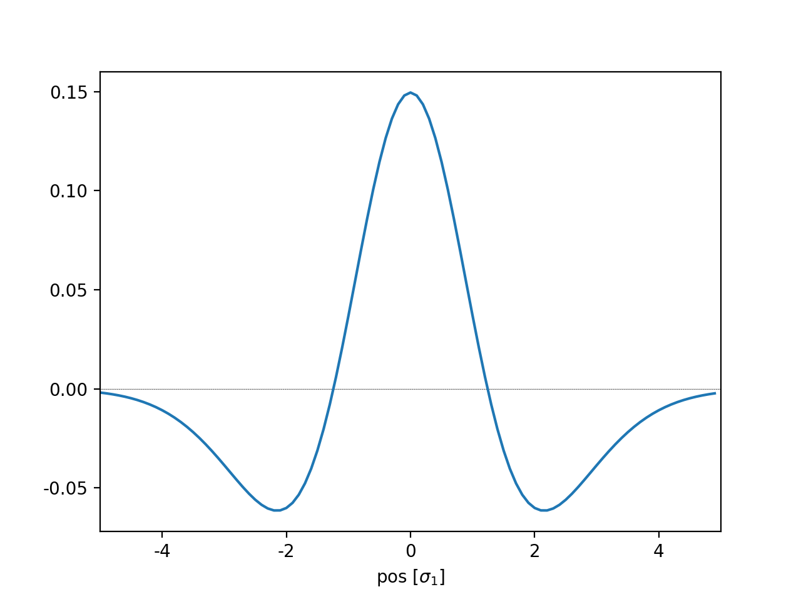
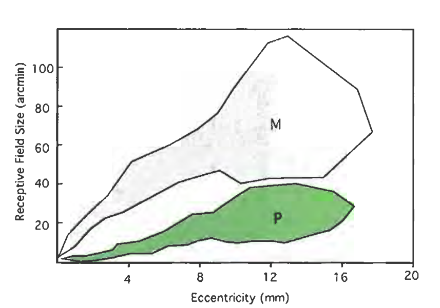

Background
The idea of a "visual prosthesis" is not as far fetched as it might seem at first, and a large number of research groups are working on different approaches. A recent overview can be found in Retinal Prostheses (Bloch, 2019) .
Exercise: Simulation of a Retinal/Visual Implant
Data
All the Files for this exercise are bundled in "Ex_Visual.zip"
In addition, you can use the following files:
- Typical standard test images that are often used in image processing (e.g. lena, mandrill, etc.) can also be found at the Waterloo BragZone.
- You can also use one of the following:
 |
 |
 |
| TheDoor.jpg (146 kB) | eye.bmp (434.kB) |
lena.tif (769 kB) This image also has an interesting story in the world of image processing. |
{kind=link}
- Hans van Hateren hosts a website with natural images that people often use for training receptive fields, etc.
General Requirements
For this exercise you should design a "visual prosthesis": Write a Pyhon program which
- Takes a given input image, or - if none is provided - lets you interactively select an input image
- In this image, lets you interactively select a fixation point ("ginput")
- Calculates the activity in the retinal ganglion cells, and shows the corresponding activity, and
- Calculates and shows the activity in the primary visual cortex, and
- Save the images to an out-file.
Retinal Ganglion Cells
- Assume that
- the display has a resolution (for those 30 cm) of 1400 pixels,
- and is viewed at a distance of 60 centimeter (see Figure below),
- and that the radius of the eye is typically 1.25 cm.

- We know that the retinal ganglion cells respond best to a "center-surround" stimulus: they show the maximum response when the center is bright and the surrounding dark ("center-on cells"), or vice versa ("center-off cells"). This behavior can be simulated with a "Difference of Gaussians" (DOG)-filter. For this exercise, simulate only "center-on" responses. The figure below shows a section through the receptive field of a typical ganglion cell. The receptive field of such a cell can be simulated with a "difference-of-Gaussians" (DOG) -filter with the following ratio for the standard deviations of the two Gaussians: $$\Large{\frac{\sigma_2}{\sigma_1}}\normalsize{ = 1.6}.$$ From the figure below we see that the sidelength of the receptive field should be about $$side\_length = 2*4\sigma_1 = 8\sigma_1,$$ so that the response can go back approximately to zero at the edges (which happens at about \(4 \sigma_1\)).

- The receptive field size increases approximately linearly with distance from the fovea.
For this exercise we simulate only magnocellular cells,
the receptive field of which have a receptive field size of approximately
$$RFS \; [arcmin] = 6 * eccentricity \; [mm].$$
The parameters are also described in the wikibook on Sensory Systems, and in the article
Computational models of early human
vision (note: you need to be in the ETH-domain to access
that file, which is part of the excellent book Handbook of Image and Video Processing),
which contains the following image for M- and P-cells:

Note: Take this parameter as approximation: I have found different values in the literature, regarding "size of receptive field", "size of dendritic field", "center size", "visual acuity", etc, and their exact relation to each other. - To implement the simulation of the retinal representation of the image,
proceed as follows:
From the selected fixation point, find the largest distance to one of the four corners of the image. Break this distance down into 10 intervals. Using those intervals, create 10 corresponding radial zones around the fixation point. For each zone, we want to find the corresponding filter: we can do so by taking the mean radius for each zone [in pixel]. From this we can find the corresponding eccentricity on the fovea [in mm], using the geometry from the figure above. This eccentricity leads to the size of the receptive field [in arcmin], which in turn can be converted into pixel, again using the geometry shown above. Selecting the next largest odd number create a symmetric filter with that side-length, and choose the filter coefficients such that they represent the corresponding DOG-filter.
Cells in V1
- Activity in V1 can be simulated by Gabor filters with different orientations. For this exercise, first only use Gabor filters which respond to vertical lines.
- Since I have not been able to find explicit information about any dependence of receptive field size on distance from fovea, please assume a constant receptive field size.
- Input is the original image, not the input from the ganglion cells! This is due to the definition of "receptive field".
- Find paramters for this vertical Gabor-filter that lead to sensible results, as assessed by visual inspection of the resulting image.
- When this works, repeat this for the activity of Gabor cells with a few different orientations (0 - 30 - 60 - 90 - 120 - 150 deg), to get a "combined image" in V1.
Tips
Python
- gabor_demo.py uses OpenCV to give a nice interactive example of how the output of different cells in V1 corresponds to different features of the image.
- Don't forget to check out the IPYNB notebooks on image processing, which should provide a good introduction to image processing with Python.
Interesting Links
General comments
- Name the main file
Ex3_Visual.py. - For submission of the exercises, please put all the
required code-files that you have written, as well as the
input- & data-files that are required by your program,
into one archive file. ("zip", "rar", or "7z".) Only submit
that one archive-file. Name the archive
Ex3_[Submitters_LastNames].[zip/rar/7z]. - Please write your programs in such a way that they run, without modifications, in the folder where they are extracted to from the archive. (In other words, please write them such that I don't have to modify them to make them run on my computer.) Provide the exact command that is required to run the program in the comment.
- Please comment your programs properly: write a program header; use intelligible variable names; provide comments on what the program is supposed to be doing; give the date, version number, and name(s) of the programmer(s).
- To submit the file, go to "Ex 3: Self-Grading".